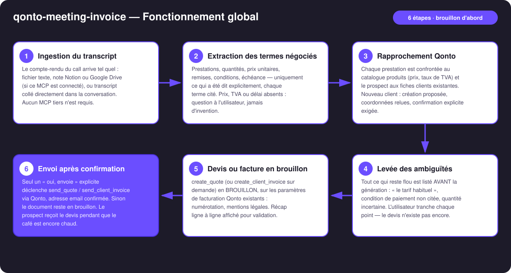
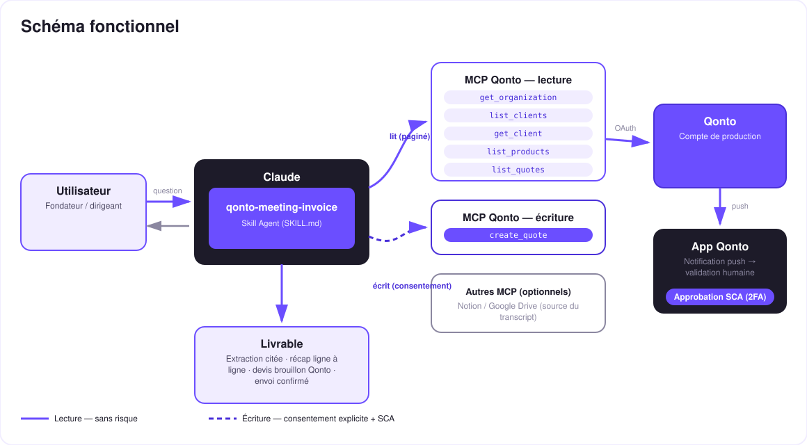

Du call au devis, avant la fin de la réunion — extraction prudente, brouillon d'abord, envoi sous confirmation.
Un bon call de vente, tout le monde est chaud… et le devis part trois jours plus tard. L'élan est retombé. Le cas d'usage call → facture a été cité au kickoff — ce skill gagne sur l'exécution : ce qui n'a pas été dit dans le call n'entre jamais dans le document.
Fichier, note Notion/Drive (si le MCP est là) ou texte collé — aucun MCP tiers requis.
Prestations, quantités, prix, remises, conditions — uniquement ce qui a été dit, chaque terme cité. Le reste : question, jamais invention.
Catalogue produits (prix, TVA), fiches clients (création confirmée si nouveau), anti-doublon sur les devis existants.
Devis (ou facture) en brouillon, récap ligne à ligne, envoi seulement après un « oui, envoie » explicite.
| Prérequis | Détail | Obligatoire |
|---|---|---|
| Compte Qonto production | Le skill s'adapte à toute organisation — get_organization d'abord, zéro donnée en dur | ✅ |
| Pays | Tous les pays Qonto ; mentions légales = paramètres de facturation du pays, taux de TVA jamais supposés (catalogue ou confirmation) | ℹ️ détecté |
| MCP Qonto connecté | Connecteur officiel (claude.ai / Claude Desktop), login OAuth | ✅ |
| Facturation Qonto configurée | Numérotation, mentions légales, coordonnées de paiement — réglé une fois dans l'app ; le skill s'appuie dessus, il ne les réinvente pas | ✅ |
| Transcript du call | Fichier, note Notion/Google Drive, ou texte collé dans la conversation | ✅ |
| Catalogue produits | Prestations avec prix et TVA (list_products) — sinon le skill demande chaque prix manquant | ⭕ recommandé |
| MCP Notion / Google Drive | Source du transcript, détectée dynamiquement — absente, le skill le dit et demande un collage | ⭕ optionnel |

list_products) et confirmé ; divergence call/catalogue signalée (« le call dit 850 €/j, ton catalogue dit 900 € »), jamais tranchée en silencecreate_client proposé avec relecture des champs connus, les manquants demandés ; list_clients d'abord (anti-doublon)
Les documents créés via MCP sont réels : la lecture (catalogue, clients, devis) est sans risque ; l'écriture ne produit qu'un brouillon. L'envoi au prospect exige la confirmation explicite dans la conversation, après le récap ligne à ligne. Rien ne part sans ton accord.
| Entendu dans le call | Devient | Vérifié contre |
|---|---|---|
| « Trois jours d'atelier en septembre » | Ligne : Atelier · qté 3 · date de début | Catalogue : titre canonique, PU, TVA |
| « On vous fait 10 % sur l'audit » | Remise sur la ligne Audit | Prix catalogue avant remise |
| « Le tarif habituel » | ⚠️ Ambiguïté listée → confirmation demandée | Catalogue + accord de l'utilisateur |
| « C'est Acme, contact marie@… » | Client du devis | list_clients — match ou création confirmée |
| Condition de paiement non citée | ⚠️ Ambiguïté listée → question ou défaut Qonto proposé | Paramètres de facturation de l'organisation |
| TVA jamais évoquée | Taux de la fiche produit, sinon confirmation | Catalogue — jamais un défaut inventé |
| Sortie | Format | Quand |
|---|---|---|
| Réponse dans la conversation | Tableaux markdown : extraction citée, liste d'ambiguïtés, récap ligne à ligne | Toujours — c'est la base |
| Brouillon dans Qonto | Devis ou facture sur le modèle de facturation de l'organisation (numérotation, mentions natives) | Après la levée des ambiguïtés |
| Email au prospect | Envoi natif Qonto (send_quote / send_client_invoice) | Seulement après confirmation explicite |
La démo ≤ 3 min jointe à la PR suit le storyboard : le problème (le devis qui part 3 jours après le call) → transcript collé & extraction citée → rapprochement catalogue/client & ambiguïtés → le devis complet dans Qonto ~90 secondes après la fin de la réunion, puis l'envoi → garde-fous. Tournée en live sur un compte de production réel.
| Idée | Effort | Note |
|---|---|---|
Acompte automatique (« 30 % à la commande ») via create_payment_link | Faible | Outil MCP officiel, même logique de confirmation |
Relance du devis non signé après N jours (list_quotes) | Faible | Se combine avec un skill de relance |
| Transcription audio directe (fichier → texte) quand l'hôte le permet | Moyen | Le skill reste centré transcript texte |
| Multi-devis A/B (avec/sans option) depuis le même call | Moyen | Deux brouillons comparés en tableau |
| Devis dans la langue du prospect | Faible | Qonto gère les modèles ; le skill adapte les libellés |
create_client seulement après relecture des coordonnées ; list_clients d'abord (anti-doublon)delete_quote / delete_client_invoice (brouillons uniquement — une facture finalisée ne se supprime pas)